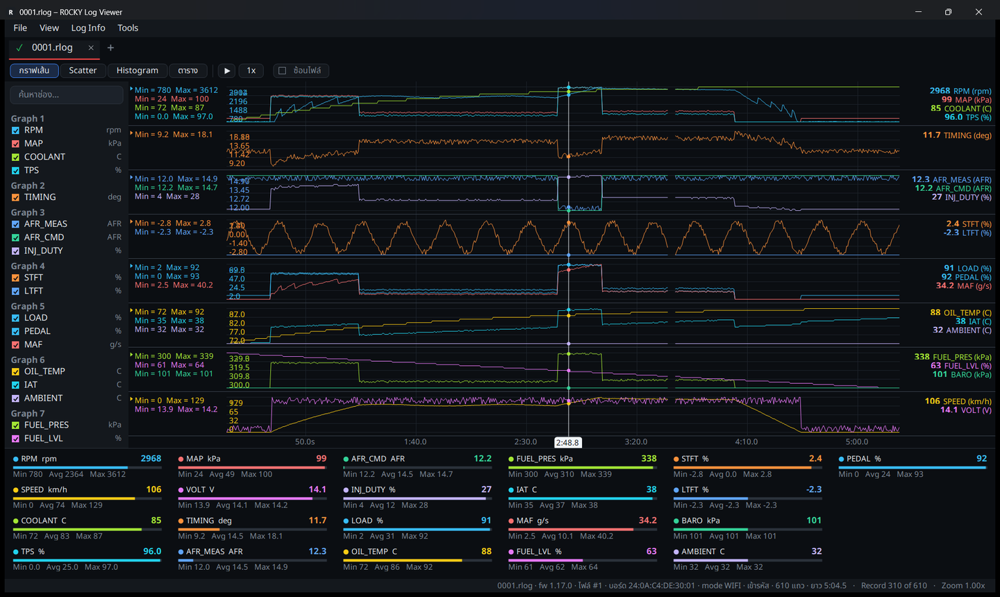

เปิดดูไฟล์ล็อกจากเกจบนพีซี
ภาพด้านล่างแคปจากโปรแกรมจริงบน Windows เปิดไฟล์ล็อกตัวอย่าง เลือกดูได้หลายมุมมอง เปิดหลายไฟล์เป็นแท็บ ซูมกราฟ เล่นย้อนหลัง และตรวจว่าไฟล์ถูกแก้หรือไม่

ภาพหน้าจอจากโปรแกรมจริง เปิดไฟล์ล็อกตัวอย่าง (ข้อมูลทดลอง ไม่ใช่ของลูกค้า)
ทำอะไรได้บ้าง
ตรวจไฟล์ไม่ถูกแก้
ทุกไฟล์ .rlog เซ็นด้วยกุญแจของร้าน โปรแกรมตรวจให้ทันทีที่เปิด ถ้ามีการแก้ ลบ หรือสลับข้อมูลจะบอก
ซ้อนกราฟ ตาราง เล่นย้อนหลัง
เปิดหลายไฟล์เป็นแท็บ ดูเป็นกราฟรายช่อง กราฟกระจาย ฮิสโตแกรม หรือตาราง แล้วเล่นย้อนตามเวลาจริง
แฟลชเฟิร์มแวร์ทาง USB
ต่อบอร์ดกับพีซีแล้วแฟลชเฟิร์มแวร์ได้จากโปรแกรมเดียวกัน ไม่ต้องติดตั้งอย่างอื่น
ค่าที่บันทึกในไฟล์ล็อก
เกจบันทึกทุก 0.5 วินาที เก็บทุกค่าที่รถส่งให้ สูงสุด 24 ค่า ไม่ว่าหน้าจอจะแสดงค่าไหนอยู่: รอบ ความเร็ว น้ำ คันเร่ง MAP แบต ไทมิ่ง AFR วัด/สั่ง injector duty และค่ามาตรฐานเพิ่มเติม เช่น โหลดเครื่อง น้ำมันเครื่อง แรงดันเชื้อเพลิง อากาศเข้า MAF fuel trim ระยะสั้น/ยาว ความดันบรรยากาศ คันเร่ง และอุณหภูมิเกียร์ ดูความหมายของแต่ละค่าได้ที่ตารางค่าที่อ่านได้
ค่าที่รถไม่ส่งมาเลยทั้งไฟล์ โปรแกรมจะไม่แสดงช่องนั้น กราฟจึงไม่รก
ไฟล์จากเฟิร์มแวร์ 1.17.0 (จอ 2.8") และ 1.3.0 (จอ 3.5") ขึ้นไป ต้องเปิดด้วย R0CKY LogViewer 1.3.0 ขึ้นไป โปรแกรมรุ่นเก่าจะขึ้นว่าไม่รู้จักไฟล์ ให้อัพเดทโปรแกรมก่อน (Tools → ตรวจอัพเดทโปรแกรม) ไฟล์เก่าทุกรุ่นยังเปิดได้ตามเดิม
ติดตั้งและอัพเดท
- ดาวน์โหลด
R0CKY-LogViewer.exeจากปุ่มด้านบน วางไว้โฟลเดอร์ไหนก็ได้ (ไม่ต้องติดตั้ง) - นำไฟล์
LogViewer.iniที่ร้านส่งให้ทางอีเมลไปวางไว้ในโฟลเดอร์เดียวกับโปรแกรม - ดับเบิลคลิกเปิดโปรแกรม แล้วลากไฟล์
.rlogจากการ์ด SD เข้ามา - รุ่นใหม่ออกเมื่อไร โปรแกรมจะถามตอนเปิด กดตกลงแล้วอัพเดทตัวเองให้ (หรือเลือก Tools → ตรวจอัพเดทโปรแกรม) รุ่นล่าสุดคือ 1.3.0
Windows อาจขึ้นหน้าต่าง SmartScreen เพราะโปรแกรมยังไม่ได้ลงลายเซ็นของผู้พัฒนา เลือก “ข้อมูลเพิ่มเติม → เรียกใช้อยู่ดี” ไฟล์ LogViewer.ini มีกุญแจเฉพาะร้าน อย่าส่งต่อให้คนอื่น